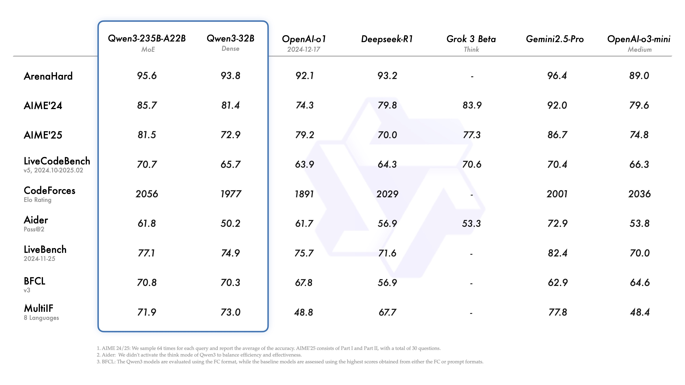

Qwen3 到底值不值得掏钱？一篇把本地部署和云端 API 的账算到骨头里
Qwen3 开源免费谁都能下，但阿里云百炼的 DashScope API 有免费额度和付费档位。本地部署要不要买显卡？云端 API 什么时候够不着免费额度？三类使用强度，三种决策。
先抛问题：你到底是在为 Qwen3 本身付费，还是为"不用自己折腾"付费？
这是我认真掂量了两个星期之后得出的核心结论。
Qwen3 本身——从 0.6B 到 235B 全系列模型权重——在官网和 Hugging Face 上都是 Apache 2.0 开源协议，一分钱不用花。你愿意花这个时间下载权重、装 Python 环境、调推理框架、对着 CUDA OOM 报错一个一个排查，那你用 Qwen3 的成本是零（电费不算的话）。
但绝大多数人不愿意花这个时间。阿里云百炼的 DashScope API 卖的不是 Qwen3 这个模型本身，卖的是"你打个请求我就给你返回结果"这个服务形态。API 按 token 计费，有免费额度，超了就花钱。
所以真正的问题不是"Qwen3 值不值付费"，而是这道选择题：你是花一次性的显卡钱+反复折腾的时间，还是花持续性的 API 钱+零运维的省心？
这篇文章就把这笔账算透。

定价拆解：免费版给什么，付费版多什么
先把两条路线的价格摊开来。
路线一：本地部署——一次性付费（或零付费）
硬件成本是唯一门槛，而且这个门槛比想象中低。
根据官方显存估算表（FP16 原生权重）：
| 你的显卡显存 | 能跑的 Qwen3 规格 | 4bit 量化后 |
|---|---|---|
| 8GB 以下 | 0.6B / 1.7B（原生都够呛，必须量化） | 0.6B / 1.7B / 4B |
| 8~16GB | 4B / 8B（量化） | 4B / 8B 流畅跑 |
| 24GB 左右 | 8B / 14B（量化） | 14B 够用 |
| 48GB 以上 | 32B / 30B-A3B（量化） | 基本全覆盖 |
量化是关键。GPTQ 或 AWQ 4bit 量化后，模型体积缩到原来的 1/4 到 1/3，精度损失在可接受范围内——日常问答、代码生成、文档处理这些场景基本感觉不到差别。也就是说一张 RTX 4090（24GB）量化跑 Qwen3-14B 是绰绰有余的。
软件成本：零。 Transformers、vLLM、SGLang、Ollama，全是免费开源的。直接从下载拿预量化好的权重，也可以去 Hugging Face 找现成的 GPTQ/AWQ 版本，不用自己跑量化流程。
时间成本：一次性投入 4~8 小时。 环境搭建（PyTorch + CUDA 版本对齐）、推理框架选型（Transformers 入门最快，vLLM 和 SGLang 性能好但配置复杂）、显存调优（上下文长度砍到 8192 通常就够）——具体参数和框架配置去qwen3文档翻一下就行。过了这一步，后续就是"开机用"。
路线二：云端 DashScope API——持续按量付费
DashScope 的计费模型分两层：免费额度 + 按量计费。
免费额度给什么：注册即送，通常够轻度使用（每天几十到几百次请求，视具体模型而定）。qwen3-flash 作为最小规格的免费档，小规模调用几乎零成本。
付费版多什么：四个档位——qwen3-flash（免费档主力，速度快、能力弱）、qwen3-turbo（性价比主力）、qwen3-plus（日常主力推荐）、qwen3-max（旗舰能力，默认开启思考模式）。每个档位按输入 token 和输出 token 分别计费，输出 token 价格更高（因为生成比读取耗算力）。
思考模式要注意：qwen3-max 默认开思考，生成 <think>...</think> 这段思考链也要算 token 收费——相当于你为"模型自己跟自己对话"的那部分 token 也在付钱。如果你的场景不需要深度推理（比如批量改写、简单问答），记得关掉思考模式，否则账单会偷偷多一截。
算账：三类人的账本长什么样
轻度用户：免费额度够用，别瞎折腾
画像：偶尔用 Qwen3 改改文案、写写代码注释、问个技术问题，每天不超过 50 次请求。
算账：DashScope 的免费额度对你绰绰有余。注册就有，每天几十到几百次请求封顶，但轻度用户根本摸不到这个顶。你甚至连 API key 都不用买——直接用网页版通义千问也行，只是少了程序化调用的便利性。
本地部署对你来说反而不划算。你不想花一下午装环境调 CUDA，你也没有独立显卡——就算有，为了每天用 10 分钟去折腾，时间成本比 DashScope 一个月的 API 钱还贵。
结论：永远不用付费。免费额度 + 偶尔网页版，完美覆盖。
主力用户：算一笔时间账再决定
画像：每天 100~500 次程序化调用，批量处理文档、代码审查、数据分析这类场景，需要 API 接入工作流。
算账公式：先算 DashScope 月费，再算本地部署的折旧。
DashScope 月费估算（以 qwen3-plus 为主力档位）：假设每天 200 次调用，每次平均输入 1000 token + 输出 500 token，按官方计费标准换算下来，每月大约在 50~150 元之间——取决于你选的档位和 token 量。
本地部署的折旧：一张 RTX 4090 按 1.2 万元、3 年折旧算，每天硬件成本约 11 元。电费忽略不计。但你需要花时间维护——推理框架升级、CUDA 版本兼容、偶尔 OOM 排查。如果你的时间每小时价值 100 元，每月花 4 小时维护就是 400 元，这比 DashScope 的 API 费还贵。
但如果你有 GPU 集群、或者公司已经配了服务器、或者你自己本来就有高端显卡（打游戏用的），那本地部署的边际成本几乎为零——显卡已经买了，闲着也是闲着。
另外一个隐性成本：思考模式。主力用户如果用 qwen3-max 做复杂推理，思考 token 会让账单翻倍。记得关掉思考模式——除非你的场景确实需要深度推理（证明题、复杂代码调试），否则直接关。
结论：如果你有现成的 GPU 资源，本地部署闭眼上。如果没有，DashScope API 是更省心的选择——每月百八十块换零运维，值。
重度用户：本地部署才是正解
画像：每天 1000+ 次调用、跑批量数据处理任务、需要完全的数据隐私、或者需要定制化微调。
算账：DashScope API 在这个量级下月费会轻松突破 5000 元，而且数据经过第三方——如果你的数据敏感（公司内部文档、用户隐私数据），过云端本身就是风险。
本地部署的优势在这里彻底显现：没有 token 计量，显卡跑满也不额外花钱，数据不出本机，可以微调，可以批量并行推理（vLLM 和 SGLang 的批量处理能力在这个量级下远超过云端 API 的单请求限制）。
硬件投入建议：单张 4090 能跑 Qwen3-14B 量化版，两张 4090 张量并行能跑 32B，四张能跑 72B 级别的 MoE。对于重度用户来说，显卡投入是一次性的固定资产投资，而 DashScope API 是持续的运营成本——用得越多，本地部署的投资回收期越短。

替代方案：不付这笔钱还有什么路
先说一个好消息：Qwen3 开源，所以"不用 Qwen3"这个替代方案本质上是"不用阿里系"。
同类免费本地模型：LLaMA 系列、Mistral 系列、Gemma 系列，全是 Apache 2.0 开源协议。如果你已经在用 Ollama 或 LM Studio，切模型就是换个名字的事。但坦白说，Qwen3 在中文能力上有明显优势——如果你主要处理中文内容，换其他模型可能觉得质量下滑。
降低使用频率的代价：把高频实时调用改成批量定时任务，攒数据攒到一定量再一次性跑。这个方案本质上是"免费额度的时间碎片化使用"——在免费额度内跑完，超限就等第二天。缺点是时效性差，不适合需要实时响应的场景。
混合路线：核心高频任务走本地部署，低频复杂任务走云端 API。比如代码审查、文档改写这类日常高频用本地 8B 量化版，偶尔需要深度推理的时候调用一次 DashScope 的 max 档。这样两边的成本都压低了。
最终结论：三秒钟对号入座
别纠结了——对照下面三条，你在哪条里就按那条做：
闭眼付（或闭眼上本地）：你有现成的 GPU 资源，或者每天调用量超过 1000 次。本地部署的一次性投入在 6~12 个月内就能从 API 账单里赚回来。
再等等：你每天调用 100~500 次，没有高端显卡，但也不急。先用 DashScope API 跑半年，看看用量会不会真的稳定在这个水平——很多人高估了自己的"重度"，三个月后发现其实轻度用户就够了。
永远不用付：你每天调用不超过 50 次。免费额度覆盖得明明白白，何必花钱。
我自己的情况：主力用户，每天大概 300 次调用。一开始用 DashScope API，每月 100 来块，省心。后来自己装了 vLLM + Qwen3-8B 量化版，折腾了一个周末搞定。现在显卡是我之前打游戏买的 4070Ti（12GB，量化跑 8B 刚好），等于没额外花钱。API 费省了，数据也不出本机，一举两得。
这件事最鸡贼的地方就在这里：你以为你在为模型付费，其实你在为"自己不折腾"付费。 模型本身是免费的，永远是免费的。
整套资料我整理了一份，Hugging Face 下载权重最方便，不想折腾的直接走 DashScope API 的 Python SDK 接入也行，国内网络环境下后者通常更顺畅。GitHub上有完整的部署脚本和配置模板，国内访问慢的话去Gitee或GitCode拿同步副本也行，装环境的时候对着抄就行，省得踩坑。